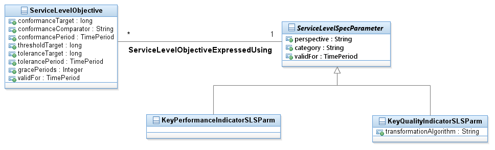

_ Service Level Addendum Figures UML Documentation
SID Models::Service Domain::Service Performance ABE::_ Service Level Addendum Figures::Figure SO.40 - Service Level Specification Parameters and Objectives Diagram Figure SO.40 - Service Level Specification Parameters and Objectives Service level objectives are defined in terms of parameters and metrics, thresholds, and tolerances associated with the parameters. The Figure below depicts Service Level Objectives, along with the Parameters that define them.Service Level Specification parameters can be one of two types. A Key Quality Indicator (KQI) provides a measurement of a specific aspect of the performance of a Product (i.e., ProductSpecification, ProductOffering, or Product) or a Service (i.e., ServiceSpecification or Service). A KQI draws its data from a number of sources, including Key Performance Indicators (KPIs). A KPI provides a measurement of a specific aspect of the performance of a Service (whether it is a network- or a non-network-based Service) or a group of Services of the same type. A KPI is restricted to a specific resource type. The figure below extends Figure SO.40 by showing how KPIs and KQIs are related to products and services.

Properties:
View
Name
Figure SO.40 - Service Level Specification Parameters and Objectives